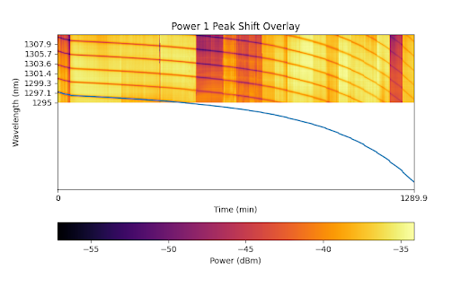
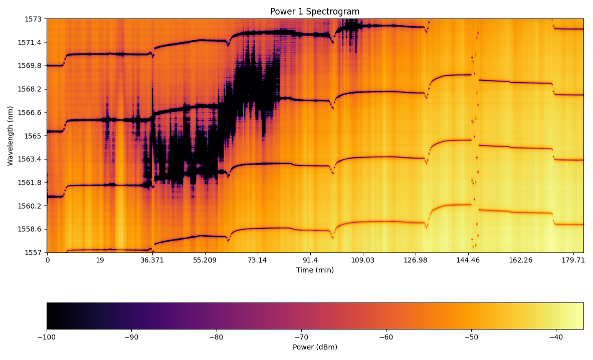
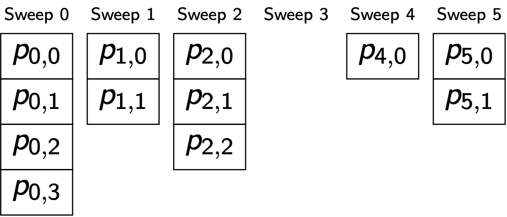
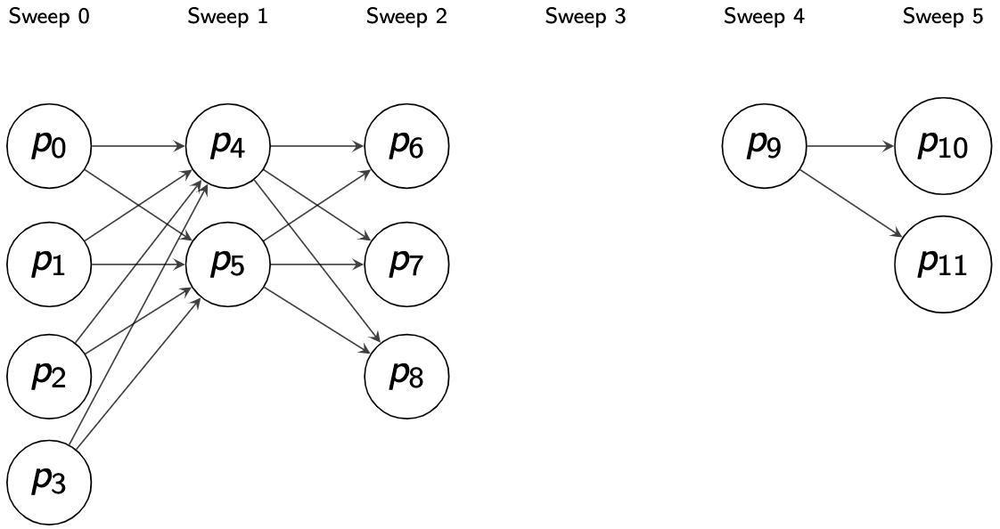
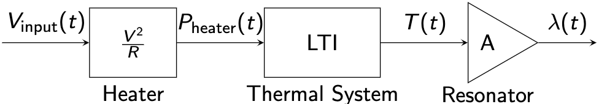
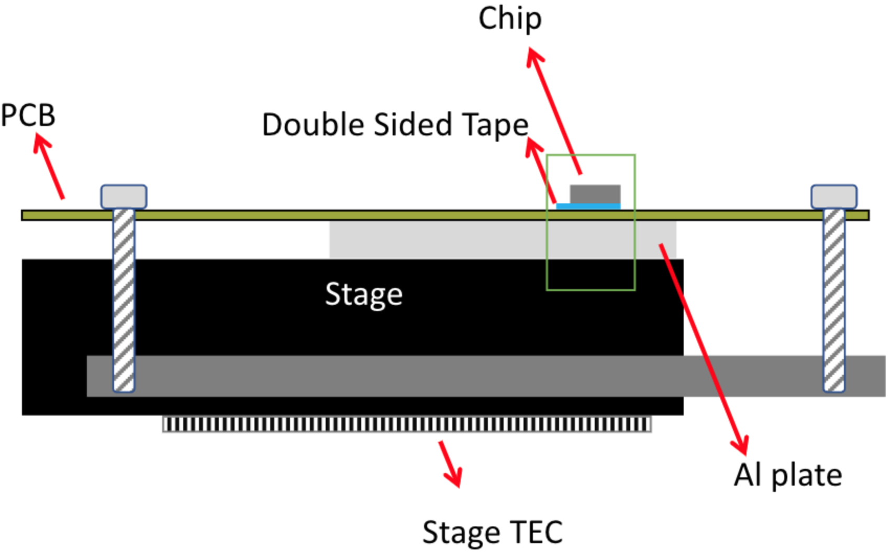
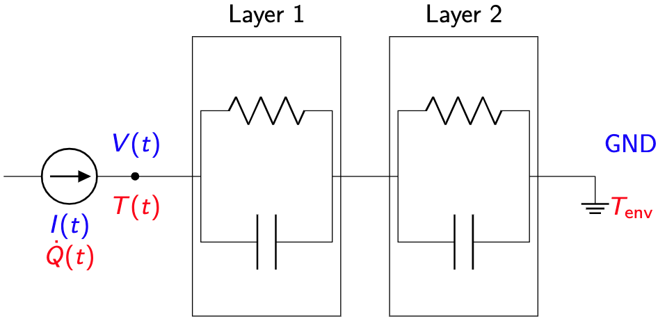
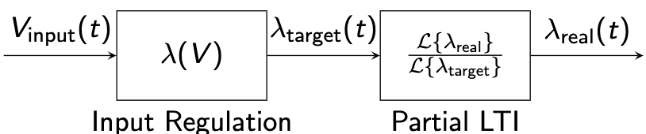

Introduction
This is the developer guide for RA-Core. Aims to provide additional information on the data analysis background of the problem and share some Python tricks for new developers.
Retrospective Analysis
RA-Core library is the core data analysis library in the Retrospective Analysis software bundle.
CLI Version
The very first and simple version was a CLI script from March 2021, maybe from Michael Caverley and Eric Lyall (from 2015-2021). It was then maintained by Samantha M. Grist until November 2021. See its git history.
RA-GUI
The first GUI version of RA was developed by Yifei Liu in 2022 summer and maintained until August 2023. See its code base as of 20230830.
The abbreviation RA means this version.
Beginning in September 2023, Piramon Tisapramotkul will be the maintainer of RA-GUI.
About This Guide
Theory
This is the theory background behind RA-Core. It is pretty much duplicated with Yifei's end-of-term presentation.
Python Tricks
This section shares some Python tricks used in RA-Core development.
API Reference
This section describes the use of the core APIs of RA-Core.
Prerequisite
The maintainer of RA-Core needs to have the following skills:
- Programming Language and Tools
- The Python Programming Language
- Python Virtual Environment
- Proficient in a Python IDE (Preferred Visual Studio Code or PyCharm)
- Basic Debugging and Troubleshooting Skills
- Basic Concepts of Object-Oriented-Programming (OOP) and OOP in Python
- Basic Idea of Data Structure
- Basic Idea of Concurrent Programming
- Git
- Markdown Syntax
- Math
- Basic Concepts of Linear Algebra
- Basic Concepts of Linear System
- High-School Math
- Physics
- Basic Circuit Theory
- Basic Conductive Heat Transfer
Curve Fitting
The curve fitting process is consisted of 2 parts:
- Find peak locations using scipy.signal.find_peaks
- Lorentzian curve fitting using scipy.optimize.curve_fit
Peak Finding
peaks, properties = find_peaks(x, height=0)
The important entries in returned properties that can help decide the curve fitting range are:
‘prominences’, ‘right_bases’, ‘left_bases’
If prominence is given, these keys are accessible. See peak_prominences for a description of their content.
Preprocessing
In practice, we find out some smoothing on the raw data before find_peaks can reduce the chance of finding noises as peaks.
Bases and Prominence
Visualization of prominence from MATLAB documentation:

The bases of a peak with large prominence may fully contain some other small peaks. Take care when using this information in specifying the fitting range in later steps.
Lorentzian Peak Function Fitting
Lorentzian Function
$$ f(x_0,y_0,I,\gamma) = y_0 + I \cdot \frac{\frac{\gamma}{2}^2}{\frac{\gamma}{2}^2 + (x-x_0)^2} $$
Sloped Lorentzian Function
$$ f(x_0,y_0,I,\gamma,a) = y_0 + I \cdot \frac{\frac{\gamma}{2}^2}{\frac{\gamma}{2}^2 + (x-x_0)^2} + a(x-x_0) $$
Curve Fitting
The use of scipy.optimize.curve_fit is directly from the legacy CLI RA script.
Basically, just specify initial guesses and bounds.
Note that initial guesses will not only affect the executing time but may also cause fitting failure (will raise an error like "exceed maximum iteration").
dBm Scale to Linear Scale
$$ \text{value in linear scale} = 10^{\frac{\text{value in dBm scale}}{10}} $$
Extinction Ratio
The Extinction Ratio (ER) is defined as the peak height in dBm scale.
$$ \text{ER} \equiv I $$
Quality Factor
The quality factor is defined by the ratio of the peak central wavelength, and the peak width at half maximum peak height (Full Width at Half Maximum, FWHM) in linear scale.
$$ Q \equiv \frac{x_0}{\gamma \text{ fitted in linear scale}} $$
High Dimensional Distance
See the available options in scipy.spatial.distance.cdist, or define your own distance metric.
Peak Tracking
Peak Tracking is tracking the peak central wavelength shift over time (over #sweep).
Because of the FSR feature of the resonator, the trace can be out of the sweep range.

Usually, the read dataset contains noises or unavailable peaks. The algorithm can:
- Compute the full-length overall peak shift trace;
- Or, compute a few trace sections, and decide their relative position later.

Peak Representation
In curve fitting, we already have the 5D vector form of peak representation. This section describes the data structure to store all the peaks in an experiment.
Ragged Array

The ragged array representation uses two subscripts to locate a peak.
peak = ragged_array[sweep_index][peak_index_in_sweep]
Notice that some sweeps may have no peaks at all.
Graph

There are actually two parts in the graph representation:
- A 1D array storing all the peak vectors.
- A 2D array (adjacency matrix) storing all the peak connections.
The graph 1D array uses a single subscript to locate a peak.
peak = graph_1d_array[index]
The graph 2D adjacency matrix uses two subscripts to describe the connection between two peaks.
connection = adjacency_matrix[peak1_index][peak2_index] # the cost from peak1 to peak2
connection = adjacency_matrix[peak2_index][peak1_index] # the cost from peak2 to peak1, if connection is directed
Construct Adjacency Matrix
How the adjacency matrix is constructed will directly affect the path finding result.
A Simple Idea
One simple idea is to only build connections for a pair of peaks between two adjacent sweeps.
# demo pseudo-code
from itertools import pairwise, product
for sweep1,sweep2 in pairwise(ragged_array):
for peak1,peak2 in product(sweep1,sweep2):
adjacency_matrix[index_of(peak1)][index_of(peak2)] = cost_function(peak1,peak2)
Notice that in the above example, if a sweep has no peak, there will be no connections between the sweep before the no-peak sweep and the sweep after the no-peak sweep.
scipy.sparse
scipy uses sparse a matrix to store an adjacency matrix. In such scipy sparse matrix, assigning a value of 0 (connection with cost of 0) to a matrix element is different than the uninitialized element (no connection).
Path Finding
The shortest path-finding algorithm is a well-studied problem. scipy has a few ready-to-use library functions.
LTI Equalization Method
Equalization means finding the mapping relationship between a reference signal and the real-time resonance wavelength on a resonator. Only when plotting power vs. wavelength, properties such as the Lorentzian peak shape, FSR, ER and Q are held.
Simplified Heat Transfer Model
System Block Diagram

LTI Thermal System Example: Heater on Chip
Assumption
Heat transfer in this process is 1D pure conduction.
Setup

Heat Circuit

LTI Parameters
The parameters can be measured in either:
- forwardly:
- measure the thermal properties of the thermal mass layers and calculate the thermal resistance/capacitance
- reversely:
- by data and observations from preliminary system identification experiments
General System Block Diagram

Input Regulation
This is the frequency-independent part.
Example: Thermal Phase Shifter
$$ \lambda_\text{target} = \frac{\text{FSR}}{P_\text{FSR}} \cdot \frac{V^2}{R} $$
Partial LTI
This is the frequency-dependent part. The LTI there must be with a DC gain of 1.
Equalization Process
LTI Simulation
When running the simulation, the simulation time needs to be long enough to reach a steady state. The time to reach stable depends on the LTI property. See sample code.
Take one steady state period output as the converted wavelength for one input signal period.
Interpolation
The converted wavelength will be unevenly spaced. Interpolate to mimic the passive wavelength format (evenly spaced).
Formatter
RA-Core follows the black code formatter default style.
Type Hint
Python PEP 484
Use type hint to improve code readability.
Type-annotated Python code should look similar to other static-type languages (C/C++, Java, C#, Rust, etc.).
Visual Studio Code Support
settings.json
"python.analysis.typeCheckingMode": "basic"
Recommend to work with Error Lens.
Functional Programming
Prerequisite: Functional Programming HOWTO
Multiprocessing
Using functional programming style, it's extremely easy to parallelize your code. Just replace the normal map() by Pool.map() from multiprocessing.pool.Pool package.
There is not a lazy version of starmap(). Mimic this by using functools.partial() in imap().
OOP
Prerequisite: Python Class
Below are additional tricks uncovered in the prerequisite read.
@property
Property is often used with private variables to have a better OOP encapsulation. Use "getter" and "setter" to ensure the validity of the property.
Abstract Base Class (ABC)
Prerequisite: Interface (OOP)
A subclass can implement such interfaces defined in the base class by implementing the abstract methods after inheriting from the base class.
The base class can provide a default implementation or not.
@abstractmethod
If the base class has no default implementation, the @abstractmethod can enforce the subclass to implement the method.
@staticmethod
@staticmethod works like a namespace. Static methods neither need to know the class nor an instance. It could be used as an alternative way to initialize a dataclass.
Example Code
Run the code below and figure out why the error occurs. Open it in an IDE and see the linting.
from abc import ABCMeta, abstractmethod
class Shape(metaclass=ABCMeta):
@abstractmethod
def print_info(self):
...
@property
@abstractmethod
def area(self) -> float:
...
@staticmethod
def compare_area(shape1: "Shape", shape2: "Shape"):
if shape1.area > shape2.area:
print(
f"This {shape1.__class__.__name__} is bigger than that {shape2.__class__.__name__}"
)
elif shape1.area < shape2.area:
print(
f"That {shape2.__class__.__name__} is bigger than this {shape1.__class__.__name__}"
)
else:
print("They are the same size")
class UnknownShape(Shape):
def __init__(self):
self.__area = None
def print_info(self):
print(f"Unknown Shape with area {self.area}")
@property
def area(self):
return self.__area
@area.setter
def area(self, area: float):
if area < 0:
raise ValueError("Area cannot be negative")
else:
self.__area = area
class Rectangle(Shape):
def __init__(self, width: float, height: float):
self.__width = width
self.__height = height
def print_info(self):
print(f"Rectangle: {self.__width} x {self.__height}")
@property
def area(self):
return self.__width * self.__height
class Triangle(Shape):
def __init__(self, base: float, height: float):
self.__base = base
self.__height = height
def print_info(self):
print(f"Triangle: {self.__base} x {self.__height}")
@property
def area(self):
return self.__base * self.__height / 2
class Circle(Shape):
def __init__(self, radius: float):
self.__radius = radius
def print_info(self):
print(f"Circle: {self.__radius}")
@property
def area(self):
return self.__radius * self.__radius * 3.14
if __name__ == "__main__":
# inheritance demo
shapes: list[Shape] = [
Rectangle(2, 3),
Triangle(3, 4),
Circle(2),
]
for shape in shapes:
shape.print_info()
print(f"Area: {shape.area}")
# shape.area = 0 # Try uncommenting this line
# AttributeError: property 'area' of 'Rectangle' object has no setter
print("------")
print()
# static method
print("-----static method demo-----")
Shape.compare_area(shapes[0], shapes[1])
Shape.compare_area(shapes[1], shapes[2])
print()
# property setter demo
print("-----property setter demo-----")
unknown_shape = UnknownShape()
if unknown_shape.area is float:
print("This will not be printed because area is None")
unknown_shape.print_info()
unknown_shape.area = 100
unknown_shape.print_info()
# validity check by setter:
unknown_shape.area = -100 # ValueError: Area cannot be negative
unknown_shape.print_info()
# abstract class demo
print("-----abstract class demo-----")
shape = Shape() # TypeError: Can't instantiate abstract class...
@dataclass
Sometimes it is useful to have a data type similar to the Pascal “record” or C “struct”, bundling together a few named data items.
Unlike normal class, it's not convenient to define data class properties as private, as the properties are aimed to be exposed to callers.
The frozen parameter can set the data class properties to readonly.
Misc
@lru_cache
Use @lru_cache if you have to call a function with the same parameter multiple times, although this calling way should be avoided.
Recommended Visual Studio Code Extensions
lib.py
Basic shared tools for Lorentzian peak fitting, cosine similarity peak tracking and hough transform peak mapping.
Peak Finding
find_peak_and_properties was refactored from the curve fitting section. It applies a Gaussian filter as a preprocessor of the data.
Curve Fitting
LorentzianPeakFitResult
Stores the results from fitting a single peak.
SweepFitResult
Essentially a list of LorentzianPeakFitResult, with constructor from raw data, and helper functions to report results.
Peak Tracking
peak_to_traces() takes all the peaks in an experiment in ragged array from, and returns a list of trace sections, with one single roughly estimated FSR.
Find Parallel Peaks
group_peaks() takes all the peak central wavelengths in ragged array from, with one full-size overall peak-shift trace. It returns a list of traces, where each trace is a list of ragged array indices.
passive_tools.py
DataReaderBase
The abstract class of passive data IO layer. Behaves like a list, where each item is of type tuple[timestamp,wavelength_array,power_2d_array]. It also has an interface to get power_2d_array only, for spectrogram plotting.
active_tools.py
ConverterConfig
The abstract data type representation of the active converter CSV config file. It has helper functions to convert from/to CSV.
CSVData
A data class representing the ramp column and power columns of a CSV data file. The ramp channel can be at any column.
SimpleRampCSVReaderBase
Essentially an iterator return all the data in an active experiment by sweep. The sweeps are sliced from the reference signal (ramp channel). The slicing algorithm should be simple and quick. This is for raw data spectrogram plotting.
AdvancedRampCSVReaderBase
Like SimpleRampCSVReaderBase, but slices the sweeps more accurately, using the LTI simulation method.
generate_sawtooth_from_data()
Guess the period and phase of a ramp signal, in terms of sample point, assuming the ramp signal is evenly sampled in time. This is used because there is missing data between CSV files, and CSV files may start from a random place of a period.
utils
Simple helper tools.
ragged_array.py
Helper class to convert between single-indexing and double-indexing. Used in peak tracking.
tqdm_qt.py
Hack tqdm to let it emit a qt signal.
Versions
20230831
The first post from Yifei Liu.